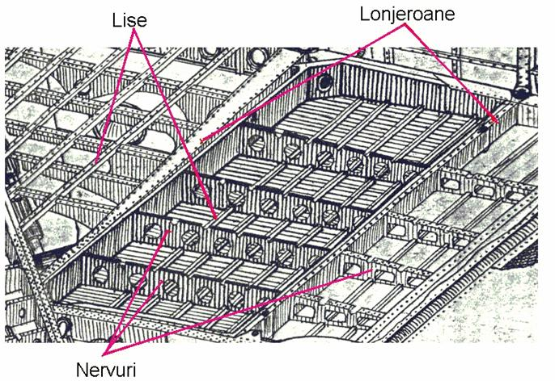
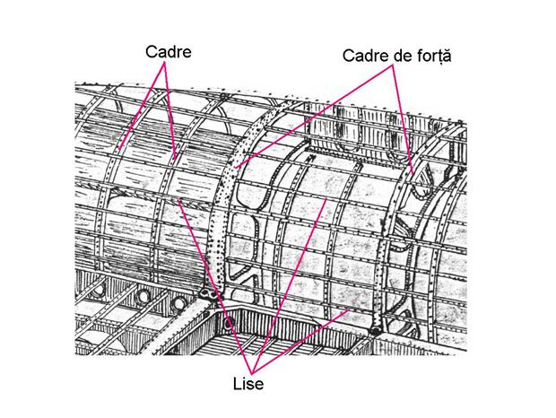
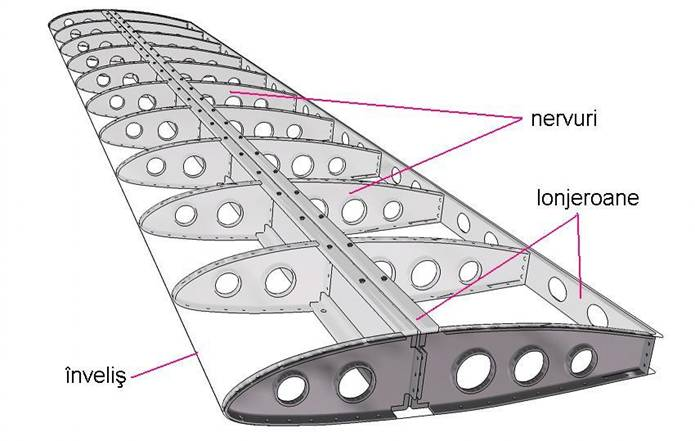
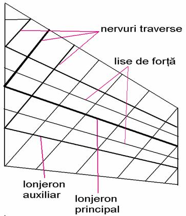

|
În zborul aerodinamic, bazat pe forța portantă, cea mai importantă parte a avionului este aripa. Împreună cu ampenajele, aripa asigură sustentația, stabilitatea și manevrabilitatea avionului. În general, aripa este compusă din structura de rezistență, înveliș exterior, rezervoarele integrate de combustibil, aparatura hidro-pneumatică aferentă comenzilor. Sub aripă se instalează trenul principal de aterizare al avionului, sistemul de propulsie, acroșaje speciale rachete, bombe sau rezervoare lărgabile. Forma în plan a aripii este extrem de diversificată, în funcție de destinația, rolul, dimensiunile, forma sau viteza avionului: aripa dreaptă (An-2, Cessna 172), aripă trapezoidală (F-22 Raptor), aripă în săgeată (A300, BAC 1-11, Su-27), aripă în săgeată cu geometrie variabilă (avionul multirol Tornado, bombardierul B-1 Lancer, MiG-23), aripă triunghiulară (F-16, MiG-21, Saab 37 Viggen), aripă delta gotic (Concorde) etc. Lonjeroanele sunt elemente de rigidizare așezate de-a lungul aripii, care preiau cea mai mare parte din forțele și momentele ce acționează asupra acesteia. Au aspectul unei grinzi consolidate alcătuite din tălpi (profile corniere) și inimă (platbandă), îmbinate între ele cu nituri. Sunt realizate de regulă din materiale rezistente la încovoiere și torsiune: duraluminiu, titan, oțeluri speciale. Nervurile sunt elemente de rigidizare transversală a aripii, montate de obicei perpendicular pe bordul de atac al aripii. Nervurile au rolul de a păstra forma aripii și de a transmite solicitările aerodinamice la lonjeroane și lise. Pot fi nervuri simple sau nervuri de forță, acestea din urmă având rolul suplimentar de a prelua forțele concentrate datorate diverselor echipamente și instalații acroșate de aripi. Fuzelajul este partea aeronavei în care este plasată cabina piloților, cabina pasagerilor, încărcătura de transport și cea mai mare parte a echipamentelor și instalațiilor de bord. El reprezintă corpul central de care se leagă aripile, ampenajele și trenul de aterizare. Fuzelajul trebuie să aibă o rezistență la înaintare minimă. De aceea forma sa trebuie să fie aerodinamică, să aibă cât mai puține proeminențe, suprafața "spălată" de curentul de aer să fie bine finisată și cu cât mai puține ondulații. Fuzelajele tip cocă sunt cele mai folosite în prezent în construcția aerospațială, ele s-au impus definitiv odată cu apariția motoarelor turboreactoare. Elementele principale ale fuzelajelor de tip cocă sunt: structura longitudinală formată din lonjeroane și lise, structura transversală formată din cadre, și învelișul rezistent. Ampenajele sunt dispozitive care reprezintă pentru aeronavă organele de echilibru, stabilitate și comandă. După modul cum sunt construite depinde în mare măsură capacitatea de manevră a aeronavei. Au părți fixe și părți mobile (cele mobile fiind comandate de pilot), situate de obicei în partea din spate a fuselajului, care asigură echilibrul avionului, măresc stabilitatea și manevrabilitatea și permit schimbarea direcției de zbor. Se compun de regulă din: ampenajul orizontal, format din stabilizator (partea fixă) și profundor (partea mobilă), servind la orientarea și dirijarea aeronavei în plan vertical și din ampenajul vertical, format din derivă (partea fixă) și direcție (partea mobilă), servind la orientarea și dirijarea avionului în plan orizontal. La aeronavele supersonice se instalează câteodată două ampenaje verticale, iar stabilizatorul are numai parte mobilă, fiind realizat dintr-o singură bucată. În configurația clasică stabilizatorul este plasat în spatele aripii, dar la avioanele de vânătoare moderne poate apărea în fața sa, rezultând așa-zisa configurație canard („rață”) (de exemplu la Eurofighter). 
|    |